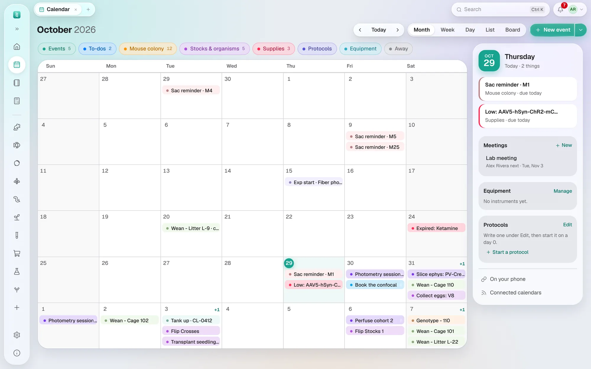

数据库
日历
实验、待办和仪器预约；断奶、鉴定基因型、转管和试剂过期等日期自动排上。
- 月、周、日 （Month, Week, Day）和 列表 （List）视图。自动填入：断奶、基因型鉴定和处死提醒、果蝇和线虫的转管与
收卵、各物种的计划、斑马鱼鱼缸和试剂过期。点一下（每种视图都是单击），旁边会弹出一个小面板：日期和时间、
是哪一类、是谁的、提到的小鼠（每只都可以点开）、备注，待办有 标记完成 （Mark done），日程或来源记录有 打开 （Open）。链接可以直接打开指定的视图和日期：
/calendar?view=week&date=2026-10-05。 - 周 （Week）视图里，每天显示星期几和日期，今天的日期在实心圆里、那一列有底色；日期下面的 截止 （Due）一行 放没有具体时间、只落在某天的事，每项一个胶囊；时间按 24 小时制，一条带圆点的红线标出现在。
- 页面标题就是当前的月份（或周、日），周视图后面还写着这一周的日期（2026年10月 · 10月25日 – 31日）。后退、今天 （Today）、前进，月 / 周 / 日 / 列表 / 看板 切换和 新建日程 （New event）都在顶部那一行。
- 看板 （Board）把你的待办做成卡片放在一列列清单里，像看板那样：收件箱（所有不在清单里的未完成待办）、 你用 添加列表 建的清单（本周、等待中……），以及 完成（最近两周勾掉的）。把卡片拖到另一个清单， 或在清单里上下拖动；拖进完成就算勾掉。添加卡片 会在那个清单里新建一张没有日期的卡片：它只留在看板上，不出现在日历的今天。 点一张卡片可以改标题、日期、清单或备注，也可以删除；有日期时它也会出现在日历的那一天。清单的 ••• 可以重命名、 左右移动或删除它（里面的卡片回到收件箱）。清单是你自己的；实验室待办对每个人都在同一个清单里。
- 日历格子旁边有一个小月历用来跳转，一个 显示 （Show）列表，每类都有颜色和数量（日程、待办、 鼠群、保种和物种、耗材、实验流程、仪器、休假、关联日历），还有仪器和 正在进行的流程。
- 新建日程 （New event）可以建日程、待办（今天、明天、下周或某天到期）、会议 （Meeting）、预约仪器 （Book equipment）、休假 （Time away） 和 开始流程 （Start a protocol）。拖动日程、待办或预约就能移动它。
- 会议 （Meetings）：每周一次的组会或文献讨论会。设好星期几、时间、地点，以及轮流报告的人。侧边栏的 会议 列出每个会议和下一位报告人； 打开一个会议，可以让轮值往后（跳过 ›）或往前（‹）移、新建 下次会议的记录 （一个共享给会议里每个人的记录本页面）、将接下来的会议加入日历 （每次都注明报告人），或查看以往的记录。会议的日程里有它的记录链接。
- 谁能看到 （Who sees it），对日程或待办：仅自己（Only me）、全实验室（Everyone in the lab）或你的某个 项目组。仅自己的，其他人都看不到，管理员也不例外。共享的日程只有 添加者和管理员能修改；共享的待办，相关的任何人都能勾掉。新建日程默认属于实验室，新建待办默认 属于你自己。
- 重复 （Repeats）：日程每 N 天、周或月重复一次，或每月同一个星期几（第一个星期一），直到某个 日期。删除这一次 （Delete this one）只去掉一个日期，只改这一次 （Change this one only）只移动或修改这一次；保存（Save）则改动所有 重复。
- 流程 （Protocols）：把步骤按从第 0 天起的天数写一次（他莫昔芬第 0–4 天，第 14 天植入，第 42 天灌注），然后 为某个实验或队列启动。每一步都落在对应的日子上；移动第 0 天，所有步骤跟着移动。已启动的流程会保留启动时的 步骤，即使之后流程被修改。（这些是把日期排上日历；实验记录本里的实验流程记录的是实验台上的具体步骤。）
- 仪器 （Equipment）：在 管理 （Manage）里添加实验室的仪器，在那里 编辑 （Edit）一台仪器可以改名、注明位置或 改颜色；它的预约会跟着更新。与其他预约时间重叠的预约会被拒绝，并说明是谁 在什么时间预约了。新预约可以每天、每个工作日或每周重复，直到某个日期——每次重复都是一个独立的预约；只要 有一次冲突，就一个都不会建。打开一个预约后点 复制 （Duplicate），会在另一天预约同一台仪器、同样的时段。
- 休假 （Time away）：请假或开会。即将离开 （Away soon）列出这期间该人名下到期的事——动物、果蝇管、 待办、预约、流程步骤——并询问由谁代管；被指定的人会收到通知。
- 关联日历 （Connected calendars）把 Google 日历和任何 iCal 订阅并排显示，只读。
- 在手机上：一个私人链接（只含你自己的事，或全实验室的），可添加到 Apple、Google 或 Outlook 日历。大约 每小时更新一次。生成新链接 （Make a new link）会让旧链接失效。Google 从互联网上读取这个链接，所以只有服务器能从互联网访问时才可用； 没有服务器时，请用 Mac 日历。
- Mac 日历 （Mac Calendar）：Mac 上的桌面版专有，不需要服务器。BioManager 会在 Mac 自带的日历 App
里让一个名为 BioManager 的日历保持最新，Mac 再把它同步到所在的账户，于是它会出现在 Google 日历或你的 iPhone 上。点一次 允许访问 （Allow access），
选择 只有我的 或 整个实验室的日历 以及放在哪里，然后点 开始 （Start）。
- iPhone：选择 iCloud。
- Google 日历：在“系统设置 → 互联网账户”中添加你的 Google 账户，并打开“日历”。Mac 不能在 Google 账户里新建日历， 所以请先在网页版 Google 日历中建一个名为 BioManager 的日历（设置 → 添加日历 → 创建新日历），等它出现在列表里再选择它。
- BioManager 打开时才会更新：每 15 分钟一次，有改动后很快也会更新。立即更新 （Update now）马上更新一次。
- 这个日历只属于 BioManager：放进去的其他内容会在下次更新时被移除，在那里做的修改也不会回到 BioManager。
- 停止 （Stop）会删除 BioManager 建的日历，或清空你自己建的那个。

这一页对你有帮助吗？
没有